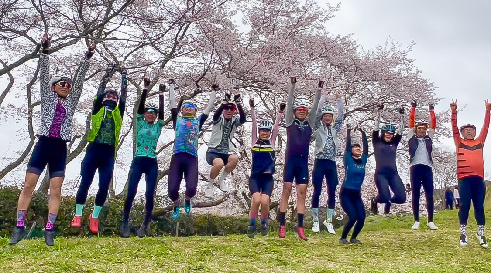

奈良・又兵衛桜ライド
2026.05.20

先日は奈良の自転車仲間
つーたんにお誘い頂き、桜ライド🌸行ってきました🚴✨
総勢12名で
ヒルクライム天国からの桜尽くしコース😂
✔︎ 距離 74.64km
✔︎ 獲得標高 1,132m
しっかり走って、しっかり楽しむ1日でした🙌
今回もお馴染みのCycology関西メンバーに加えて、
最近よくご一緒するSlowly cruisingの皆さんともライド🚴
…いや、どこがスローリーやねん😂笑
トレイン組んで全力ダウンヒルはいい思い出です🤣
さらにまさかの再会！
Cycology東海のmakotoさんともエンカウント😳
キャノンデールのトップストーン、めちゃかっこよかった✨
今回の立ち寄りスポット👇
📍 多武峰ヒルクライム
📍 紅遊茶屋（さくらもち）
📍 又兵衛桜
📍 吉野山の桜
📍 cafe de Ruhe（からあげランチ）
📍 いちごスイーツ Adèle 🍓
📍 飛鳥川の桜
どこを切り取っても春全開の最高ライド🌸
企画してくれたつーたん、
そして一緒に走ってくれた皆さん
ありがとうございました🙌
また走りましょう🚴✨
ちゃんちゃん
TOPへ戻る